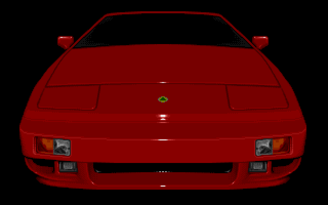

Basic Sprite Animation
An introduction to using hardware sprites on the Amiga. Learn how to define sprite data, position sprites, and create simple animations. The Amiga's hardware sprites were a game-changer, allowing for fast, smooth-moving objects without needing to redraw the background (a process managed by the Blitter!).
What is a Hardware Sprite?
A hardware sprite is a separate, small graphical object that the Amiga's video hardware can display on top of the normal background screen. The Amiga has 8 hardware sprites, each 16 pixels wide and any height. They have their own color palettes and their positions can be updated independently of the main screen, making them perfect for characters, bullets, and cursors.
How Animation Works: The Vertical Blank
So how do we make a sprite move? The key to smooth animation on the Amiga is timing. We need to change the sprite's position at a consistent rate. The perfect time to do this is during the "vertical blank" period—the brief moment after the video beam has finished drawing the last line of the screen and before it jumps back to the top to start drawing the next frame.
By setting up a **Level 3 Interrupt**, we can tell the Amiga to run a small piece of our code automatically at the start of every vertical blank. This code will handle updating the sprite's horizontal position, making it move smoothly from side to side.
The Complete, Animated Code (anim_sprite.asm):
;-----------------------------------------------------
; A complete, ANIMATED Hardware Sprite example
; Takes over the system and moves a sprite using a
; vertical blank interrupt.
;-----------------------------------------------------
CUSTOM equ $DFF000
INTENA equ CUSTOM+$9A ; Interrupt Enable
INTREQ equ CUSTOM+$9C ; Interrupt Request
DMACON equ CUSTOM+$96
SPR0PTH equ CUSTOM+$120 ; Sprite 0 pointer HIGH
SPR0PTL equ CUSTOM+$122 ; Sprite 0 pointer LOW
SPR0POS equ CUSTOM+$140 ; Sprite 0 Position
SPR0CTL equ CUSTOM+$142 ; Sprite 0 Control
SPRITE0_PAL1 equ CUSTOM+$1A2 ; Sprite palette color 1
SPRITE0_PAL2 equ CUSTOM+$1A4 ; Sprite palette color 2
SPRITE0_PAL3 equ CUSTOM+$1A6 ; Sprite palette color 3
COLOR00 equ CUSTOM+$180 ; Background color
EXEC_BASE equ $4
LVL3_INT_VECTOR equ $6C
; --- Program Start ---
start:
lea CUSTOM,a5
move.l EXEC_BASE,a6
; --- Save old interrupt vector and disable interrupts ---
move.l LVL3_INT_VECTOR(a6),old_int_vector(pc)
move.w #$C000,INTENA(a5) ; Disable all interrupts
; --- Wait for vertical blank to safely take over ---
.waitvb
move.w $DFF005,d0
btst #8,d0
beq.s .waitvb
; --- Install our new VBlank interrupt ---
lea vblank_interrupt(pc),a0
move.l a0,LVL3_INT_VECTOR(a6)
; --- Point the hardware to our sprite data ---
lea sprite_data(pc),a0
move.l a0,SPR0PTH(a5) ; Pointer needs 32-bit access
; --- Set sprite colors ---
move.w #$0f80,SPRITE0_PAL1(a5) ; Red
move.w #$0ff0,SPRITE0_PAL2(a5) ; Yellow
move.w #$0fff,SPRITE0_PAL3(a5) ; White
; --- Enable DMA and VBlank Interrupt ---
move.w #$8100,DMACON(a5) ; Enable DMA Master and Sprites
move.w #$C020,INTENA(a5) ; Enable Master and VBlank Interrupt
forever_loop:
btst #6,$BFE001 ; Check for left mouse click
bne.s forever_loop
; --- Exit gracefully ---
move.w #$C020,INTENA(a5) ; Disable VBlank interrupt
move.l old_int_vector(pc),LVL3_INT_VECTOR(a6) ; Restore old interrupt
move.w #$7FFF,DMACON(a5) ; Disable all DMA
rts
; --- Vertical Blank Interrupt Handler ---
vblank_interrupt:
movem.l d0-d1/a0-a1,-(sp) ; Save registers we are about to use
lea CUSTOM,a5
; --- Animation logic ---
move.w sprite_x(pc),d0
move.w sprite_dir(pc),d1
add.w d1,d0
; Check boundaries and reverse direction
cmp.w #$D0,d0 ; Right edge
bge.s .reverse
cmp.w #$40,d0 ; Left edge
ble.s .reverse
bra.s .no_reverse
.reverse:
neg.w d1
move.w d1,sprite_dir(pc)
.no_reverse:
move.w d0,sprite_x(pc) ; Store new position
; Update sprite hardware registers
move.w #$64,d1 ; Vertical start position = 100
lsl.w #8,d1
add.b d0,d1 ; Add horizontal position
move.w d1,SPR0POS(a5)
move.w #$C8,d1 ; Vertical stop position = 200
lsl.w #8,d1
add.b d0,d1 ; Add horizontal position
move.w d1,SPR0CTL(a5)
; --- Acknowledge the interrupt and restore registers ---
move.w #$0020,INTREQ(a5) ; Acknowledge VBlank interrupt
move.w #$0020,INTREQ(a5) ; Acknowledge again (hardware quirk)
movem.l (sp)+,d0-d1/a0-a1 ; Restore registers
rte ; Return from Exception
; --- Data Section ---
old_int_vector: dc.l 0
sprite_x: dc.w $80 ; Initial horizontal position
sprite_dir: dc.w 1 ; Initial direction (1 = right, -1 = left)
sprite_data:
; Control words are now set by the interrupt
; The first two words are ignored, but must be here
dc.w $0000, $0000
; Image Data (16 lines of a simple shape)
dc.w $0180, $0180, dc.w $03C0, $03C0
dc.w $07E0, $07E0, dc.w $0FF0, $0FF0
dc.w $1FF8, $1FF8, dc.w $3FFC, $3FFC
dc.w $7FFE, $7FFE, dc.w $FFFF, $FFFF
dc.w $FFFF, $FFFF, dc.w $7FFE, $7FFE
dc.w $3FFC, $3FFC, dc.w $1FF8, $1FF8
dc.w $0FF0, $0FF0, dc.w $07E0, $07E0
dc.w $03C0, $03C0, dc.w $0180, $0180
; End of sprite data
dc.w $0000, $0000
How to Compile and Run on macOS
- Save the Code: Save the complete code above into a file named `anim_sprite.asm`.
- Assemble: Open your Terminal, navigate to the folder where you saved the file, and run: `vasmm68k_mot -Fhunk -o anim_sprite anim_sprite.asm`
- Set up Emulator: In your emulator (vAmiga or FS-UAE), mount the folder containing your new `anim_sprite` executable as a hard drive (e.g., as `DH0:` with volume label `Work`).
- Run in Emulator: Boot your emulated Amiga into Workbench. Open the `Work` drive on the desktop, then open the `Shell` or `CLI`. Type `anim_sprite` and press Enter.
- See the Result: A multi-colored sprite should now be gliding back and forth across a black screen! You can click the left mouse button to exit cleanly back to the Workbench.